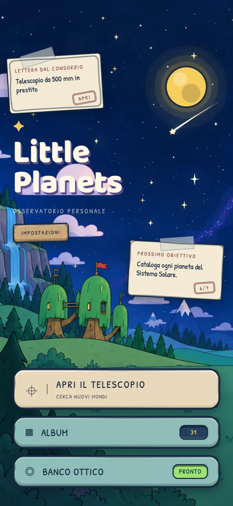
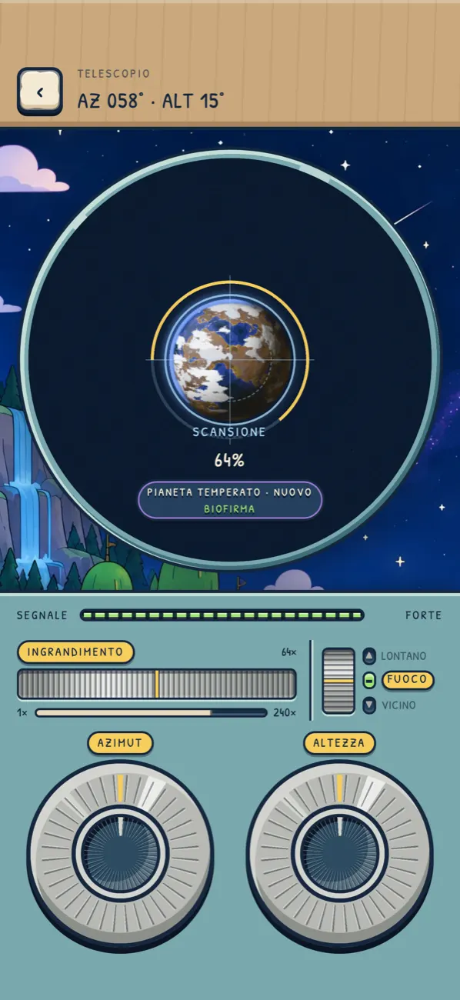
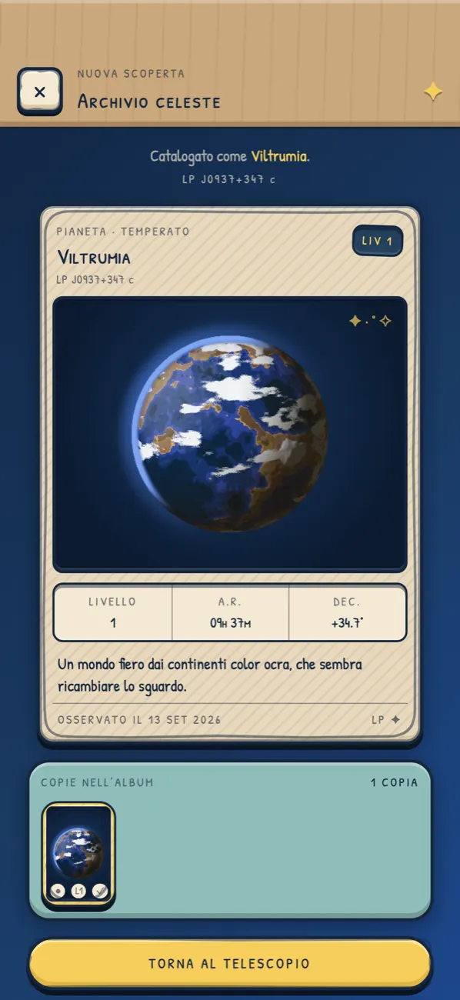
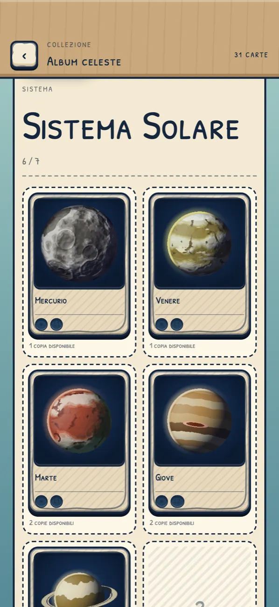
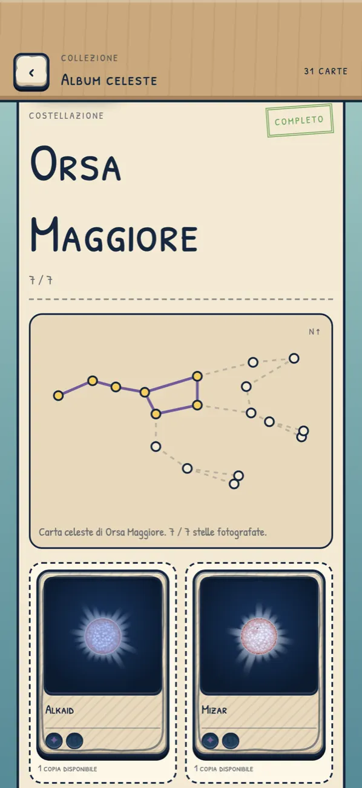
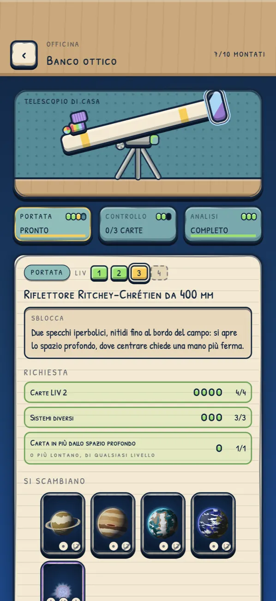

Il cielo vero
Stelle reali e pianeti confermati, dal Sistema Solare agli esopianeti. E oltre, un universo procedurale senza fondo.
Osservatorio personale
Punta il telescopio, scopri stelle e pianeti veri e immaginati, e colleziona le loro carte in un album tutto tuo.
Presto su iOS e Android





Stelle reali e pianeti confermati, dal Sistema Solare agli esopianeti. E oltre, un universo procedurale senza fondo.
Gira le ghiere di azimut e altezza, ingrandisci, metti a fuoco e tieni fermo lo strumento per completare la scansione.
Ogni foto diventa una carta. Unisci i doppioni, completa i sistemi e tutte le 88 costellazioni.
Scambia le carte con nuove lenti, montature e spettrografi per raggiungere il cielo profondo. Le carte sono l'unica moneta.
Gratis Nessuna pubblicità, mai. Nessun account: i salvataggi restano sul tuo dispositivo e il gioco funziona offline.
Un solo acquisto facoltativo, l'Osservatorio completo, apre gli strumenti più potenti e le regioni più lontane del cielo. Non vende carte né scorciatoie, e non ti toglie nulla.
In italiano e in inglese.